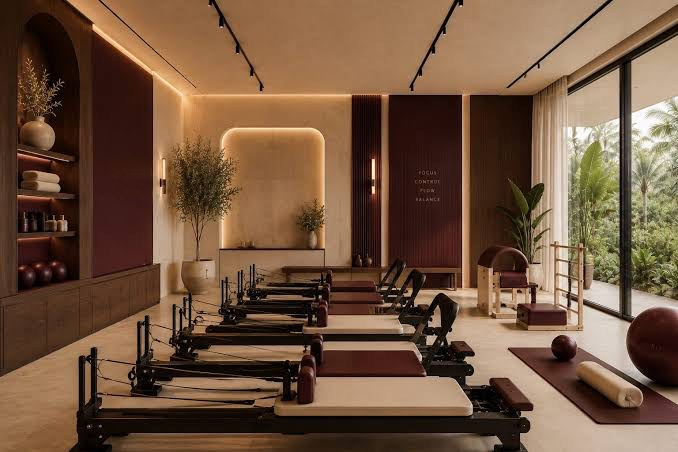

Красносельский район · скоро открытие
Пилатес на реформерах рядом с домом
Камерная студия на четыре реформера: тренер видит каждого, а занятие подстраивается под ваше тело — без переполненных залов и поездок через весь город.

Маленькая студия — большое внимание
До 4 человек
Мини-группы по числу реформеров: тренер поправит технику каждого.
Для любого уровня
Первое занятие — знакомство с аппаратом и подбор нагрузки.
Рядом с домом
Красносельский район: не нужно ехать в центр после работы.
Удобная запись
Оставьте заявку на сайте — мы подберём время и напомним о занятии.
Три шага до первого занятия
Заявка
Выберите формат и удобное время в форме записи.
Пробное
Познакомитесь с реформером, тренер оценит подвижность и цели.
Абонемент
Подберём формат и частоту занятий под ваш ритм.